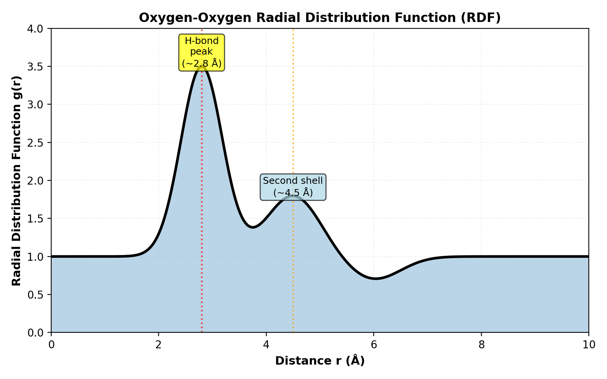

Force Fields : Water
Overview
A molecular force field is a set of mathematical functions and parameters that define the potential energy of a system as a function of atomic coordinates. Force fields enable:
Simulation of molecular dynamics and structural properties
Calculation of thermodynamic properties (density, heat capacity, diffusion)
Prediction of spectroscopic properties (IR, Raman, neutron scattering)
Efficient exploration of conformational space via molecular dynamics (MD)
In this section, we focus on intermolecular interactions and popular water models, which dominate simulations in biochemistry, materials science, and environmental science.
Intermolecular Interactions: General Principles
Long-Range Interactions
Long-range interactions decay slowly with distance and must be evaluated over many molecules. Common long-range forces:
Coulombic (Electrostatic) Interactions
Two point charges \(q_i\) and \(q_j\) separated by distance \(r_{ij}\):
\[V_{\text{elec}}(r_{ij}) = k_e \frac{q_i q_j}{r_{ij}}\]where \(k_e = 8.988 \times 10^9 \, \text{N·m}^2\text{·C}^{-2}\) (in vacuum) or \(k_e = 1389.4 \, \text{kcal·Å·mol}^{-1}\text{·e}^{-2}\) (chemistry units).
Range: \(\sim 1/r\) → extends to ~20 Å with noticeable effects
Crucial for ions, charged residues, dipolar molecules (like water)
Often computed via Ewald summation or PME (Particle Mesh Ewald) for periodic systems
Dispersion (Van der Waals) Interactions
Induced dipole attractions from quantum fluctuations:
\[V_{\text{disp}}(r_{ij}) = -\frac{C_6}{r_{ij}^6}\]Range: \(\sim 1/r^6\) → decays faster than Coulomb
Typically combined with short-range repulsion to form Lennard-Jones or similar potentials
Close-Range Interactions (Short-Range)
Short-range interactions dominate at small separations and are often treated with pair potentials evaluated up to a cutoff (~12 Å).
Repulsive (Pauli) Interactions
Born repulsion due to orbital overlap and Pauli exclusion:
\[V_{\text{rep}}(r_{ij}) = A \exp\left(-\frac{r_{ij}}{\rho}\right) \quad \text{or} \quad \frac{B}{r_{ij}^{12}}\]Dominates at \(r < 3\) Å
Often modeled as \(1/r^{12}\) (Lennard-Jones 12-6)
Lennard-Jones (LJ) Potential
The 12-6 LJ potential combines repulsion and dispersion:
\[V_{\text{LJ}}(r_{ij}) = 4\varepsilon_{ij} \left[ \left(\frac{\sigma_{ij}}{r_{ij}}\right)^{12} - \left(\frac{\sigma_{ij}}{r_{ij}}\right)^{6} \right]\]where:
\(\varepsilon_{ij}\) = well depth (attraction strength)
\(\sigma_{ij}\) = collision diameter (where \(V = 0\))
\(r_{\min} = 2^{1/6}\sigma_{ij} \approx 1.122 \sigma_{ij}\) (equilibrium distance)
Combining Rules
For unlike pairs (atom types \(i \neq j\)):
Arithmetic mean (Lorentz rule): \(\sigma_{ij} = \frac{1}{2}(\sigma_i + \sigma_j)\)
Geometric mean (Berthelot rule): \(\varepsilon_{ij} = \sqrt{\varepsilon_i \varepsilon_j}\)
Intramolecular Terms (brief overview)
While this section focuses on intermolecular interactions, many force fields also include:
Bond stretching: \(V_b = k_b(r - r_0)^2\)
Angle bending: \(V_\theta = k_\theta(\theta - \theta_0)^2\)
Dihedral torsions: \(V_\phi = \sum_n V_n [1 + \cos(n\phi - \gamma_n)]\)
These are critical for molecular structure and are extensively parameterized in most force fields.
Water Models Overview
Water is the most abundant molecule in biological and environmental systems. Its small size, strong intermolecular forces, and anomalous properties (e.g., density maximum at 4°C) make it a benchmark for force field development.
Key Properties to Match
Dipole moment (\(\mu\)): ~1.85 Debye (experimental)
Density (\(\rho\)): ~1.0 g/cm³ at 298 K
Dielectric constant (\(\varepsilon_r\)): ~80 at room temperature
Heat of vaporization (\(\Delta H_{\text{vap}}\)): ~10.5 kcal/mol
Radial distribution function (RDF) g(r): shape and peaks
Self-diffusion coefficient (D): ~2.3 × 10⁻⁵ cm²/s at 298 K
Model Classification
Water models are classified by:
Geometry: Rigid vs. flexible bonds
Charge sites: 3-site (O, H, H), 4-site (O + virtual M), 5-site (O, 2H, 2 virtual)
Functional form: Coulomb + LJ, or with additional terms
Naming Convention
SPC: Simple Point Charge (3 sites)
TIP: Transferable Intermolecular Potential (3 or 4 sites)
q-TIP4P/f: Quantum Drude oscillator variant
-EW / -Ew: Ewald summation optimized
Detailed Water Model Comparison
We now examine eight popular water models in detail, organized from simplest to most sophisticated.
1. SPC (Simple Point Charge)
Publication: Berendsen et al. (1981)
Geometry: 3-site rigid model
where \(x\) is distance along O–H bond axis.
Key Characteristics:
Dipole moment: 2.27 D (overestimated by ~23%)
O–H distance: 1.0 Å (rigid)
H–O–H angle: 109.47° (rigid)
Complexity: Very low; runs fastest
LJ parameters: O atom only (H atoms have no VdW)
Cutoff: Typically 10–12 Å
Strengths:
Extremely fast; widely used in large simulations
Reasonable liquid structure
Good for non-aqueous systems
Weaknesses:
Dipole moment too high → overestimates dielectric constant
Surface tension underestimated
Hydrophobic effect overestimated
2. SPC/E (SPC Extended)
Publication: Berendsen et al. (1987)
Geometry: 3-site rigid model (same as SPC)
Key Characteristics:
Dipole moment: 2.35 D (closer to experiment: 1.85 D)
O–H distance: 1.0 Å
H–O–H angle: 109.47°
Complexity: Very low (identical to SPC)
Cutoff: 10–12 Å
Changes from SPC:
Slightly adjusted charge distribution to improve properties.
Strengths:
Better dipole moment than SPC
Improved dielectric constant
Still fast
More stable for long simulations
Weaknesses:
Still overestimates dipole moment compared to gas-phase value
Dielectric constant still somewhat high
3. TIP3P (Transferable Intermolecular Potential, 3-site)
Publication: Jorgensen et al. (1983)
Geometry: 3-site rigid model
Key Characteristics:
Dipole moment: 2.35 D
O–H distance: 0.9572 Å (experimental geometry)
H–O–H angle: 104.52° (experimental)
Complexity: Low
Cutoff: 10–12 Å
Why “Transferable”:
TIP3P was parameterized to match intermolecular interactions from ab initio calculations, intending better transferability to different environments.
Strengths:
Uses experimental O–H and H–O–H geometry
Good hydrogen bonding geometry
Widely used; extensive literature
Computational efficiency comparable to SPC/E
Weaknesses:
Dipole moment still overestimated (~27% higher)
Known to form too-stable hydrogen bonds
Surface tension underestimated
Dielectric constant higher than experiment
4. TIP4P (Transferable Intermolecular Potential, 4-site)
Publication: Jorgensen et al. (1983)
Geometry: 4-site rigid model with virtual M site (virtual point representing the negative charge center)
O–H distance: 0.9572 Å H–O–H angle: 104.52° O–M distance: 0.15 Å
Key Characteristics:
Dipole moment: 2.17 D (closer to experiment)
Complexity: Medium (virtual site computation)
Cutoff: 10–12 Å with Ewald summation recommended
Virtual Site Concept:
The negative charge is displaced from the oxygen toward the hydrogen lone-pair direction. This decouples the LJ repulsion center (on O) from the charge center (on M), improving properties.
Strengths:
Better dipole moment than TIP3P
Improved dielectric constant and hydrogen bonding
Excellent liquid structure (RDF)
Good compromise between accuracy and speed
Weaknesses:
Slightly more expensive than TIP3P (M site calculation)
Still overestimates some properties
Virtual site requires special handling in some codes
5. TIP4P/2005 (TIP4P Refined, 2005)
Publication: Abascal & Vega (2005)
Geometry: 4-site rigid model (similar structure to TIP4P)
Key Characteristics:
Dipole moment: 2.305 D
Complexity: Medium (same as TIP4P)
Cutoff: 10–12 Å with Ewald summation
Improvements over TIP4P:
Re-parameterized to better match:
Bulk density across a wider temperature range
Heat of vaporization
Liquid structure
Strengths:
Superior density and thermodynamic properties across temperature range
Excellent balance of properties
One of the most accurate models for standard conditions
Good hydrogen bonding
Weaknesses:
Slightly more expensive (though similar to TIP4P)
Less widespread use historically (but growing)
6. TIP4P/Ice
Publication: Vega et al. (2009)
Geometry: 4-site rigid model (TIP4P-like architecture)
Key Characteristics:
Dipole moment: 2.42 D
Complexity: Medium
Designed for: Ice and solid-liquid interfaces
Specific Parameterization:
TIP4P/Ice was specifically optimized to reproduce:
Ice polymorphs (Ih, II, III, V, VI, VII, VIII)
Ice–water interfacial properties
Melting point and phase diagram
Strengths:
Best model for ice phases and ice-water interfaces
Excellent solid-state properties
Reproduces Ih melting point remarkably well
Weaknesses:
Slightly worse for pure liquid water properties than TIP4P/2005
Optimized for cold temperatures
7. TIP4P/Ew (TIP4P with Ewald summation)
Publication: Horn et al. (2004)
Geometry: 4-site rigid model
Key Characteristics:
Dipole moment: 2.08 D (lower than TIP4P)
Complexity: Medium
Explicitly for: Periodic boundary conditions with Ewald summation
Why Ewald-Specific?
Parameterized assuming full electrostatic treatment via Ewald/PME rather than cutoff-based Coulomb. This changes the effective electrostatic environment and thus optimal parameters.
Strengths:
Excellent for periodic simulations with full Ewald
Better density predictions
Lower dipole moment (more physical)
Good thermodynamic properties
Weaknesses:
Must use Ewald summation (not suitable for cutoff methods)
Less commonly used than TIP4P/2005
Slightly reduced hydrogen bonding strength
8. SPC/Fw (SPC Flexible Water)
Publication: Wu et al. (2006)
Geometry: 3-site flexible model (O–H bonds can stretch)
Charges and LJ:
Key Characteristics:
Dipole moment: ~2.27 D (similar to rigid SPC)
Complexity: Medium (bond integration needed)
Flexibility: Allows O–H stretch and H–O–H bend
Advantages of Flexibility:
Better spectroscopic properties (IR absorption)
More realistic vibrational dynamics
Can couple to quantum dynamics
Strengths:
Reasonably fast (similar to SPC)
Flexible water more realistic for some applications
Good for combined classical/quantum simulations
Weaknesses:
Requires shorter time steps (stiff O–H bond)
More CPU time than rigid models
Spectroscopic accuracy still limited
9. q-TIP4P/f (Quantum TIP4P/f)
Publication: Burnham et al. (2002)
Geometry: 4-site with quantum corrections (similar to TIP4P)
Quantum Corrections:
Effective potential includes quantum zero-point motion contributions via:
Key Characteristics:
Dipole moment: ~2.16 D
Complexity: High (quantum averaging)
Designed for: Accurate path integral molecular dynamics (PIMD)
Advantages:
Accounts for nuclear quantum effects (NQE)
Better for low-temperature properties
Important for isotope effects (D₂O vs H₂O)
Strengths:
Only model explicitly treating quantum effects
Excellent for PIMD simulations
More accurate density at low temperature
Weaknesses:
Most computationally expensive
Requires specialized code for quantum averaging
Limited adoption outside quantum dynamics community
Comparative Summary Table

Model |
Sites |
Dipole (D) |
Density (g/cm³) |
Flexible? |
Complexity |
Cost |
|---|---|---|---|---|---|---|
SPC |
3 |
2.27 |
0.970 |
No |
Very Low |
1x |
SPC/E |
3 |
2.35 |
0.995 |
No |
Very Low |
1x |
TIP3P |
3 |
2.35 |
0.976 |
No |
Very Low |
1x |
TIP4P |
4 |
2.17 |
0.998 |
No |
Low |
1.1x |
TIP4P/2005 |
4 |
2.305 |
0.994 |
No |
Low |
1.1x |
TIP4P/Ice |
4 |
2.42 |
0.992 |
No |
Low |
1.1x |
TIP4P/Ew |
4 |
2.08 |
0.994 |
No |
Low |
1.1x |
SPC/Fw |
3 |
2.27 |
0.972 |
Yes |
Medium |
1.3x |
q-TIP4P/f |
4 |
2.16 |
1.005 (PIMD) |
No |
High |
5–10x |
Exp. values: μ ≈ 1.85 D, ρ ≈ 1.000 g/cm³ at 298 K, 1 atm
Hydrogen Bonding in Water Models
All water models rely on hydrogen bonding for liquid structure. The quality of hydrogen bonding is assessed via:
Radial Distribution Function (RDF)
where \(\rho(r)\) is the local density at distance \(r\) from a reference molecule.
First Peak (H-bond distance ~2.8 Å):
Height indicates H-bond coordination number
Better models (TIP4P/2005, TIP4P/Ice) show sharper, taller peaks
SPC/E and TIP3P show slightly broader peaks
Hydrogen Bond Definition:
Common geometric criterion:
O–O distance \(r < 3.5\) Å
O–H···O angle \(\theta > 150°\)
Coordination Number:
For most models: ~3.4–3.8 water neighbors within first shell (~3.5 Å).
{kind=link}
Choosing a Water Model for Your Simulation
For high-speed simulations (MD, large systems): → Use SPC, SPC/E, or TIP3P Fast and reasonably accurate for most purposes.
For standard biomolecular simulations: → Use TIP4P/2005 Best balance of accuracy and efficiency. Excellent thermodynamic properties.
For ice, solid-state, interfaces: → Use TIP4P/Ice Specifically optimized for phase transitions and ice structures.
For periodic systems with Ewald summation: → Use TIP4P/Ew Optimized for full electrostatic treatment.
For quantum dynamics or isotope effects: → Use q-TIP4P/f with PIMD Only model accounting for nuclear quantum effects.
For spectroscopic properties (IR, Raman): → Use SPC/Fw Flexible bonds allow realistic vibrational dynamics.
For educational purposes: → Use TIP3P or SPC/E Well-documented, widely implemented, fast.
Extensions and Modern Developments
Polarizable Water Models
Recent developments include explicit polarization:
Drude oscillator: Attached to each atom, responds to electric field
Induced dipole: Allows adaptive electrostatic response
Example: Drude-2013 (Harder et al., 2013)
Machine Learning Potentials
Neural network and kernel-based models trained on ab initio data:
DeePMD-kit (Deep Potential Molecular Dynamics)
ANI (Automated Interatomic Potential)
Enable higher accuracy with reasonable computational cost
ab initio Molecular Dynamics (AIMD)
Direct calculation from quantum mechanics via DFT (Density Functional Theory):
Highest accuracy for intermolecular interactions
Much slower than classical MD (~1000–10000x)
Increasingly used for validation and parameterization
References and Further Reading
Berendsen, H. J. C., Grigera, J. R., & Straatsma, T. P. (1987). The missing term in effective pair potentials. J. Phys. Chem., 91(24), 6269–6271. [SPC/E]
Jorgensen, W. L., Chandrasekhar, J., Madura, J. D., Impey, R. W., & Klein, M. L. (1983). Comparison of simple potential functions for simulating liquid water. J. Chem. Phys., 79(2), 926–935. [TIP3P, TIP4P]
Abascal, J. L. F., & Vega, C. (2005). A general purpose model for the condensed phases of water. J. Chem. Phys., 123(23), 234505. [TIP4P/2005]
Vega, C., Abascal, J. L. F., Conde, M. M., & Aragones, J. L. (2009). Water-ice interfacial energy and ice-nucleation rate from the TIP4P/2005 water model. J. Chem. Phys., 130(14), 144504. [TIP4P/Ice]
Horn, H. W., Swope, W. C., Pitera, J. W., et al. (2004). Development of an improved four-site water model for biomolecular simulations. J. Chem. Phys., 120(20), 9665–9678. [TIP4P/Ew]
Burnham, C. J., Xantheas, S. S., Miller, M. A., Solca, R., & Temelso, B. (2002). The vibrational spectrum of the water dimer from experiments, ab initio theory, and classical simulations. J. Chem. Phys., 117(4), 1500–1510. [q-TIP4P/f]
Wu, Y., Tepper, H. L., & Voth, G. A. (2006). Flexible simple point-charge water model with improved liquid-state properties. J. Chem. Phys., 124(2), 024503. [SPC/Fw]
Darden, T., York, D., & Pedersen, L. (1993). Particle mesh Ewald: An N·log(N) method for Ewald sums in large systems. J. Chem. Phys., 98(12), 10089–10092. [PME for long-range electrostatics]
Lemkul, J. A., & Roux, B. (2013). From single channel conductance to macroscopic ionic currents: History and theory. J. Gen. Physiol., 141(3), 349–358. [Comprehensive review of electrostatic methods in molecular simulations]
Guillot, B. (2002). A reappraisal of what we have learnt during three decades of computer simulations on water. J. Mol. Liq., 101(1-3), 219–260. [Critical analysis of water force field performance across 30 years of development]